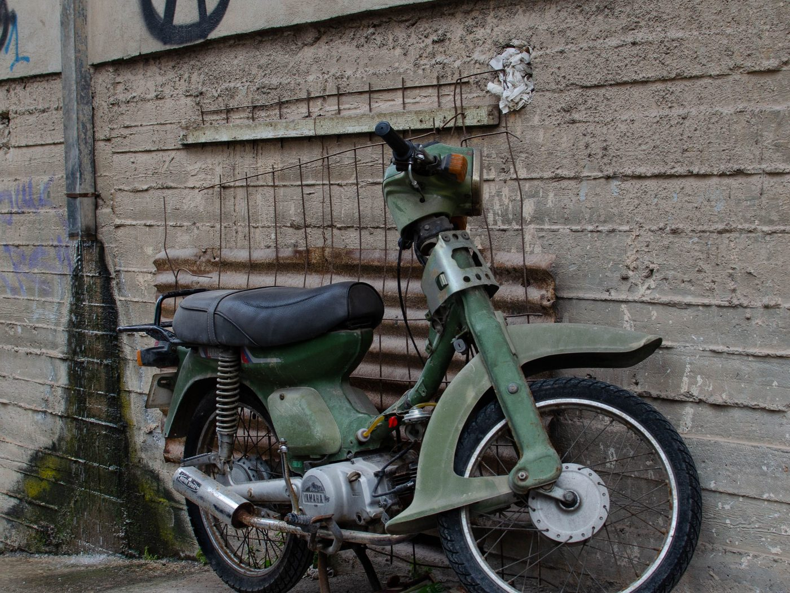
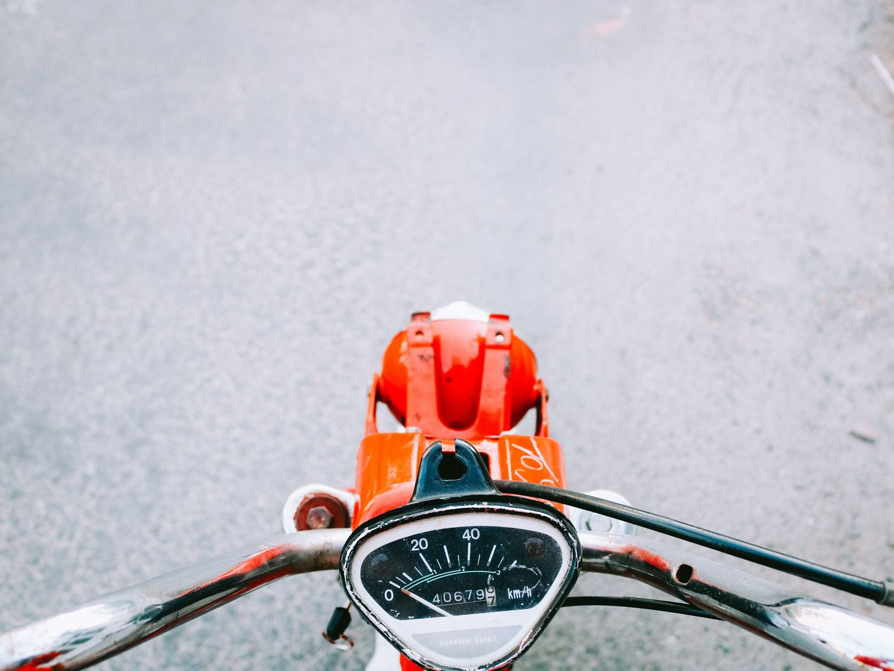
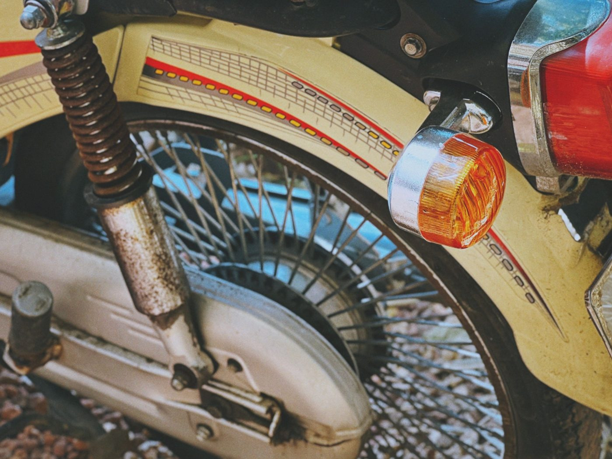

베트남에서 50cc 오토바이 살 때 흔한 실수 7가지

베트남에서는 오토바이를 빨리 삽니다 — 도착 후 며칠 안에, 감정적으로, 번역 앱을 켜고. 그래서 같은 실수가 해마다 반복됩니다. 실제로 돈이 드는 실수 7가지와 각각을 피하는 방법입니다.
1. 서류 대신 “50cc”라는 말을 믿는다
가장 비싼 실수입니다. 판매 글의 “50cc”, 외장의 스티커, 판매자의 말은 아무 의미가 없습니다. 유일한 증거는 배기량(49, 49.5 또는 50cm³)이 적힌 블루카드(cà vẹt)입니다. 등록증에 110이나 125라고 적혀 있다면, 아무리 작아 보여도 다른 등급의 차량이며 그에 따른 요건이 적용됩니다.
피하는 법: 결제 전에 배기량과 번호판이 보이는 등록증 사진을 요청하고, 차대번호와 엔진번호를 오토바이에 각인된 번호와 대조하세요. 자세한 내용 — 서류로 진짜 50cc 확인하는 법.
2. 등록증 없는 오토바이를 “합의로” 산다
“서류를 잃어버렸어요”, “내일 가져올게요”, “여기선 다 이렇게 타요” — 이 말이 나오면 거래를 멈춰야 합니다. 블루카드 없는 오토바이는 제대로 되팔 수 없습니다. 현지 구매자들은 이런 오토바이를 피하고, 처분할 수 없는 차량만 남게 됩니다.
피하는 법: 등록증 원본은 돈을 건네기 전에 손에 있어야 합니다. 후가 아니라.

3. 계기판 숫자만 믿는다
주행거리는 조작되며, 10분이면 됩니다. 12,000 km라는 숫자 자체는 아무것도 증명하지 않습니다.
피하는 법: 여러 신호를 함께 보세요 — 타이어와 브레이크 패드 마모, 그립과 버튼 상태, 시트와 발판의 닳음, 유격, 냉간 시동 상태. 주변 모든 것이 “10만”을 말하는데 계기판이 1만 2천이라면 — 기계를 믿으세요. 별도 가이드: 50cc 오토바이 주행거리 판단법.

4. 냉간 시동과 시승을 건너뛴다
미리 데워 둔 엔진은 문제의 절반을 숨깁니다. 결함을 아는 판매자는 이미 시동이 걸린 오토바이로 맞이합니다.
피하는 법: 눈앞에서 차가운 상태로 시동을 걸어 달라고 하세요. 공회전 소리를 듣고, 라이트, 방향지시등, 브레이크등, 앞뒤 브레이크를 확인하고, 가속과 제동을 하며 최소 200~300m를 달려보세요. 짧은 체크리스트는 주행 전 오토바이 점검에 있습니다.
5. 모르는 판매자에게 선결제를 보낸다
“예약금 보내면 오토바이 잡아둘게요”는 예쁜 사진과 시세보다 훨씬 싼 가격의 판매 글에서 흔한 수법입니다. 돈은 사라지고, 오토바이는 애초에 없었습니다.
피하는 법: 오토바이와 서류가 눈앞에 있을 때 결제하거나, 서류와 영상을 확인한 명확한 절차를 따르세요. 너무 싼 가격은 행운이 아니라 뭔가 잘못됐다는 가장 흔한 신호입니다.
6. 어떻게 되팔지 생각하지 않는다
오토바이는 한 시즌을 위해 사지만 “이걸 어떻게 처분하지”라는 고민은 출국 2주 전에 생깁니다. 재판매 가치는 구매하는 순간 결정됩니다. 깨끗한 50cc 블루카드가 있고 큰 수리 흔적이 없는 오토바이는 팔리고, “회색” 오토바이는 팔리지 않습니다.
피하는 법: 서류를 오토바이의 핵심 자산으로 여기세요. 자세히 — 출국 전 냐짱에서 50cc 오토바이 파는 법.

7. 맞지 않는 차종을 산다
레트로 모페드, 스쿠터, 반자동은 주행감이 다릅니다. 처음 이륜차를 타는 사람에게는 도심 교통에서 4단 반자동이 스쿠터보다 어렵습니다. 반대로 레트로 모델의 자세와 개성이 중요한 사람도 있습니다.
피하는 법: 보러 가기 전에 무엇이 필요한지 정하세요: 스쿠터냐 수동이냐, 그리고 50cc 오토바이에는 어떤 종류가 있는지. 각각 몇 분씩 타보는 것이 한 달 뒤 오토바이를 바꾸는 것보다 쌉니다.
저희가 이 7가지를 해결하는 방법
그래서 저희는 매장으로 일합니다: 베트남 전역에서 직접 오토바이를 찾고, 등록증을 직접 확인하고, 냐짱으로 가져와 오일을 교환하고, 주유하고, 점검하고, 세차합니다. 혼자 7가지 위험을 감수하는 대신, 서류가 갖춰진 준비된 오토바이를 보러 오시면 됩니다.
요약
외관보다 서류, 주행거리계보다 냉간 시동, 선결제보다 실물 확인. 이 세 가지 규칙만 지켜도 7가지 실수 중 6가지는 일어나지 않습니다. 다음은 카탈로그의 재고 오토바이와 전체 점검 체크리스트.